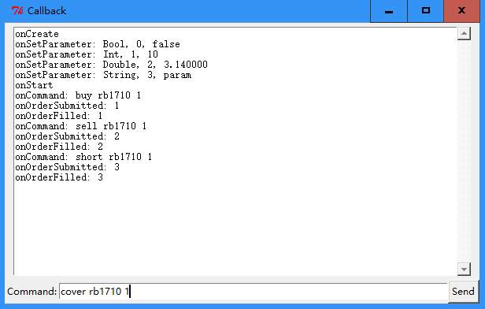

在这里可以找到更多示例代码。
Tick
Bar
# -*- coding: utf-8 -*-
from PowerGate import StrategyBase
from PowerGate import StrategyConfig
from PowerGate import Resolution
class BarDemo(StrategyBase):
def __init__(self, *args, **kwargs):
super(BarDemo, self).__init__(*args, **kwargs)
def onBar(self, bar):
print('Instrument:%s, DateTime:%s, Resolution:%d, Interval:%d' % \
(bar.getInstrument(), bar.getDateTime(), bar.getResolution(), bar.getInterval()))
if __name__ == '__main__':
config = StrategyConfig()
config.setName('BarDemo')
config.subscribe('rb1710', Resolution.MINUTE, 1)
config.subscribe('ag1712', Resolution.MINUTE, 2)
config.subscribe('IF1706', Resolution.SECOND, 5)
strategy = BarDemo()
strategy.run(config)
raw_input()
strategy.stop()
在该示例中，我们在策略的配置中订阅了rb1710、ag1712、IF1706三个合约，周期分别为1分钟、2分钟和5秒钟。
策略运行之后，我们在终端窗口中将会看到这三个合约的打印信息，时间间隔分别为1分钟、2分钟和5秒钟。
指标
定时器
# -*- coding: utf-8 -*-
from PowerGate import StrategyBase
from PowerGate import StrategyConfig
class TimerDemo(StrategyBase):
def __init__(self, *args, **kwargs):
super(TimerDemo, self).__init__(*args, **kwargs)
def onStart(self):
self.registerTimer(1000)
def onTimer(self, timerId):
print(timerId)
self.registerTimer(1000)
if __name__ == '__main__':
config = StrategyConfig()
config.setName('TimerDemo')
strategy = TimerDemo()
strategy.run(config)
raw_input()
strategy.stop()
我们使用registerTimer()接口注册了一个时间间隔为1000ms的定时器。这个定时器是一次性的，不会周期性的触发，所以在定时器的回调函数中，我们必须重新注册定时器。
该示例每隔一秒打印一次当前定时器的ID。
发送命令
回调函数
# -*- coding: utf-8 -*-
import logging
import Tkinter
from Tkinter import Frame
from Tkinter import Label
from Tkinter import Button
from Tkinter import Entry
from PowerGate import StrategyBase
from PowerGate import StrategyConfig
class Callback(StrategyBase):
def __init__(self, logger):
StrategyBase.__init__(self)
self.logger = logger
def onCreate(self):
self.logger.info('onCreate')
def onSetParameter(self, name, type, value, isLast):
self.logger.info('onSetParameter: %s, %d, %s' % (name, type, value))
def onStart(self):
self.logger.info('onStart')
def onPause(self):
self.logger.info('onPause')
def onResume(self):
self.logger.info('onResume')
def onTick(self, tick):
pass
#self.logger.info('onTick: %s @ %d %d.%d, price:%d' %
(tick.instrument, tick.date, tick.time, tick.millis, tick.lastPrice))
def onBar(self, bar):
self.logger.info('onBar')
def onOrderSubmitted(self, order):
self.logger.info('onOrderSubmitted: %s', order.clOrdId)
def onOrderRejected(self, order):
self.logger.info('onOrderRejected: %s', order.clOrdId)
def onOrderCancelled(self, order):
self.logger.info('onOrderCancelled: %s', order.clOrdId)
def onOrderFilled(self, order):
self.logger.info('onOrderFilled: %s', order.clOrdId)
def onCommand(self, command):
self.logger.info('onCommand: %s' % command)
words = command.split()
if len(words) == 2:
action = words[0]
inst = words[1]
if action == 'sub':
self.subscribe(inst)
return
if len(words) == 3:
action = words[0]
inst = words[1]
try:
qty = float(words[2])
except ValueError:
return
if action == 'buy':
self.buy(inst, qty, self.getAskPrice(inst))
elif action == 'sell':
self.sell(inst, qty, self.getBidPrice(inst))
elif action == 'short':
self.sellShort(inst, qty, self.getBidPrice(inst))
elif action == 'cover':
self.buyToCover(inst, qty, self.getAskPrice(inst))
def onStop(self):
self.logger.info('onStop')
class GUI(object):
class TextHandler(logging.Handler):
def __init__(self, text):
logging.Handler.__init__(self)
self.text = text
def emit(self, record):
msg = self.format(record)
def append():
self.text.configure(state='normal')
self.text.insert(Tkinter.END, msg + '\n')
self.text.configure(state='disabled')
self.text.yview(Tkinter.END)
self.text.after(0, append)
def __init__(self):
root = self.root = Tkinter.Tk()
root.title('Callback')
root.protocol("WM_DELETE_WINDOW", self.on_closing)
root.bind('<Return>', self.send_command)
self.build_gui()
self.run_strategy()
def build_gui(self):
import ScrolledText
st = ScrolledText.ScrolledText(self.root, state='disabled')
st.configure(font='TkFixedFont')
st.grid(row=0, column=0, padx=2, pady=5)
frame = Frame(self.root, height=20)
frame.grid(row=1)
Label(frame, text="Command:").grid()
self.entry = Entry(frame, width=70)
self.entry.grid(row=0, column=1)
self.entry.focus_set()
btn = Button(frame, text='Send')
btn.grid(row=0, column=2)
btn.bind('<Button-1>', self.send_command)
text_handler = self.TextHandler(st)
logger = self.logger = logging.getLogger()
logger.setLevel(logging.DEBUG)
logger.addHandler(text_handler)
def send_command(self, event):
text = self.entry.get()
if text == 'pause':
self.strategy.pause()
elif text == 'resume':
self.strategy.resume()
else:
self.strategy.sendCommand(text)
self.entry.delete(0, Tkinter.END)
def run_strategy(self):
config = StrategyConfig()
config.setName('Callback')
config.setUserParameter('Bool', False);
config.setUserParameter('Int', 10);
config.setUserParameter('Double', 3.14);
config.setUserParameter('String', 'param');
config.subscribe('rb1710')
self.strategy = Callback(self.logger)
self.strategy.run(config)
def on_closing(self):
self.strategy.stop()
self.root.destroy()
if __name__ == '__main__':
gui = GUI()
gui.root.mainloop()
在这个例子中，为了便于观察回调事件，我们使用Python自带的Tkinter图形库创建了一个简单的窗口，用户可以在窗口底部的命令行中输入：订阅、买开、卖开、买平、卖平共5个命令，这些命令通过onCommand()接口传递给交易策略，交易策略解析并执行命令。
用户可以通过顶部的窗口观察回调函数的输出。
